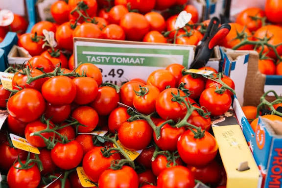
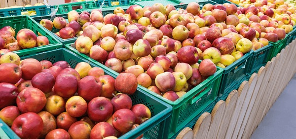

Reader Reviews
Leave a Review
Popular Posts

Top 10 Health Benefits of Organic Food
June 15, 2025

Seasonal Eating: Why It Matters
May 28, 2025

How to Store Fruits for Maximum Freshness
May 10, 2025
Subscribe to Newsletter
Get the latest updates on new products and special offers